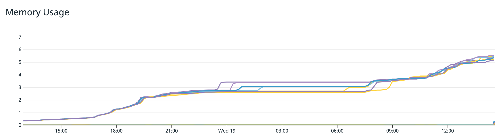

Engineering
Engineering
Debugging High Latency Due to Context Leaks


Background
Market-Store is an in-house developed general purpose feature store that is used to serve real-time computed machine learning (ML) features. Market-Store has a stringent SLA around latency, throughput, and availability as it empowers ML models, which are used in Dynamic Pricing and Consumer Experience.
Problem
As Grab continues to grow, introducing new ML models and handling increased traffic, Market-Store started to experience high latency. Market-Store’s SLA states that 99% of transactions should be within 200ms, but our latency increased to 2 seconds. This affected the availability and accuracy of our models that rely on Market-Store for real-time features.
Latency Issue
We used different metrics and logs to debug the latency issue but could not find any abnormalities that directly correlated to the API’s performance. We discovered that the problem went away temporarily when we restarted the service. But during the next peak period, the service began to struggle once again and the problem became more prominent as Market-Store’s query per second (QPS) increased.
The following graph shows an increase in the memory used with time over 12 hours. Even as the system load receded, memory usage continued to increase.

The continuous increase in memory consumption indicated the possibility of a memory leak, which occurs when memory is allocated but not returned after its use is over. This results in consistently increasing consumed memory until the service runs out of memory and crashes.
Although we could restart the service and resolve the issue temporarily, the increasing memory use suggested a deeper underlying root cause. This meant that we needed to conduct further investigation with tools that could provide deeper insights into the memory allocations.
Debugging Using Go Tools
PPROF is a profiling tool by Golang that helps to visualise and analyse profiles from Go programmes. A profile is a collection of stack traces showing the call sequences in your programme that eventually led to instances of a particular event i.e. allocation. It also provides details such as Heap and CPU information, which could provide insights into the bottlenecks of the Go programme.
By default, PPROF is enabled on all Grab Go services, making it the ideal tool to use in our scenario. To understand how memory is allocated, we used PPROF to generate Market-Store’s Heap profile, which can be used to understand how inuse memory was allocated for the programme.
You can collect the Heap profile by running this command:
go tool pprof 'http://localhost:6060/debug/pprof/heap'
The command then generates the Heap profile information as shown in the diagram below:

From this diagram, we noticed that a lot of memory was allocated and held by the child context created from Async Library even after the tasks were completed.
In Market-Store, we used the Async Library, a Grab open-source library, which typically used to run concurrent tasks. Any contexts created by the Async Library should be cleaned up after the background tasks are completed. This way, memory would be returned to the service.
However, as shown in the diagram, memory was not being returned, resulting in a memory leak, which explains the increasing memory usage even as Market-Store’s system load decreased.
Uncovering the Real Issue
So we knew that Market-Store’s latency was affected, but we didn’t know why. From the first graph, we saw that memory usage continued to grow even as Market-Store’s system load decreased. Then, PPROF showed us that the memory held by contexts was not cleaned up, resulting in a memory leak.
Through our investigations, we drew a correlation between the increase in memory usage and a degradation in the server’s API latency. In other words, the memory leak resulted in a high memory consumption and eventually, caused the latency issue.
However, there was no change in our service that would have impacted how contexts are created and cleaned up. So what caused the memory leak?
Debugging the Memory Leak
We needed to look into the Async Library and how it worked. For Market-Store, we updated the cache asynchronously for the write-around caching mechanism. We use the Async Library for running the update tasks in the background.
The following code snippet explains how the Async Library works:
async.Consume(context.Background(), runtime.NumCPU()*4, buffer)
// Consume runs the tasks with a specific max concurrency
func Consume(ctx context.Context, concurrency int, tasks chan Task) Task {
// code...
return Invoke(ctx, func(context.Context) (interface{}, error) {
workers := make(chan int, concurrency)
concurrentTasks := make([]Task, concurrency)
// code ...
t.Run(ctx).ContinueWith(ctx, func(interface{}, error) (interface{}, error) {
// code...
})
}
}
func Invoke(ctx context.Context, action Work) Task {
return NewTask(action).Run(ctx)
}
func(t *task) Run(ctx context.Context) Task {
ctx, t.cancel = context.WithCancel(ctx)
go t.run(ctx)
return t
}
Note: Code that is not relevant to this article was replaced with code.
As seen in the code snippet above, the Async Library initialises the Consume method with a background context, which is then passed to all its runners. Background contexts are empty and do not track or have links to child contexts that are created from them.
In Market-Store, we use background contexts because they are not bound by request contexts and can continue running even after a request context is cleaned up. This means that once the task has finished running, the memory consumed by child contexts would be freed up, avoiding the issue of memory leaks altogether.
Identifying the Cause of the Memory Leak
Upon further digging, we discovered an MR that was merged into the library to address a task cancellation issue. As shown in the code snippet below, the Consume method had been modified such that task contexts were being passed to the runners, instead of the empty background contexts.
func Consume(ctx context.Context, concurrency int, tasks chan Task) Task {
// code...
return Invoke(ctx, func(taskCtx context.Context) (interface{}, error) {
workers := make(chan int, concurrency)
concurrentTasks := make([]Task, concurrency)
// code ...
t.Run(taskCtx).ContinueWith(ctx, func(interface{}, error) (interface{}, error) {
// code...
})
}
}
Before we explain the code snippet, we should briefly explain what Golang contexts are. A context is a standard Golang package that carries deadlines, cancellation signals, and other request-scoped values across API boundaries and between processes. We should always remember to cancel contexts after using them.
Importance of Context Cancellation
When a context is cancelled, all contexts derived from it are also cancelled. This means that there will be no unaccounted contexts or links and it can be achieved by using the Async Library’s CancelFunc.
The Async Library’s CancelFunc method will:
- Cancel the created child context and its children
- Remove the parent reference from the child context
- Stop any associated timers
We should always make sure to call the CancelFunc method after using contexts, to ensure that contexts and memory are not leaked.
Explaining the Impact of the MR
In the previous code snippet, we see that task contexts are passed to runners and they are not being cancelled. The Async Library created task contexts from non-empty contexts, which means the task contexts are tracked by the parent contexts. So, even if the work associated with these task contexts is complete, they will not be cleaned up by the system (garbage collected).
As we started using task contexts instead of background contexts and did not cancel them, the memory used by these contexts was never returned, thus resulting in a memory leak.

It took us several tries to debug and investigate the root cause of Market-Store’s high latency issue and through this incident, we learnt several important things that would help prevent a memory leak from recurring.
-
Always cancel the contexts you’ve created. Leaving it to garbage collection (system cleanup) may result in unexpected memory leaks.
-
Go profiling can provide plenty of insights about your programme, especially when you’re not sure where to start troubleshooting.
-
Always benchmark your dependencies when integrating or updating the versions to ensure they don’t have any performance bottlenecks.
Special thanks to Chip Dong Lim for his contributions and for designing the GIFs included in this article.
Join Us
Grab is the leading superapp platform in Southeast Asia, providing everyday services that matter to consumers. More than just a ride-hailing and food delivery app, Grab offers a wide range of on-demand services in the region, including mobility, food, package and grocery delivery services, mobile payments, and financial services across 428 cities in eight countries.
Powered by technology and driven by heart, our mission is to drive Southeast Asia forward by creating economic empowerment for everyone. If this mission speaks to you, join our team today!